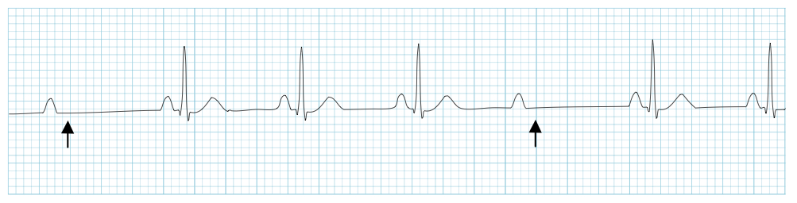

Heart Blocks
First Degree A/V Block
PR interval is greater than 200ms (five small squares on grid paper)
Second Degree A/VBlock, Mobitz I
PR interval progressively lengthens, culminating in a dropped beat. PR interval is the longest before the dropped beat, and is shortest immediately after the dropped beat.
Second Degree A/VBlock, Mobitz II
Instance when there are 2 P waves per QRS. There is not a lengthening of the PR interval as in Mobitz I. The PR interval in conducted beats remain constant. All P waves will "march through" at a constant rate.

Third Degree A/V Block (Complete Heart Block)
In complete heart block, the P waves have no relation to the QRS. The QRS's are regular, as are the P waves. The rhythm is maintained by a junctional or ventricular escape rhythm. Typically the rate will be severe bradycardia (30s in my experience).